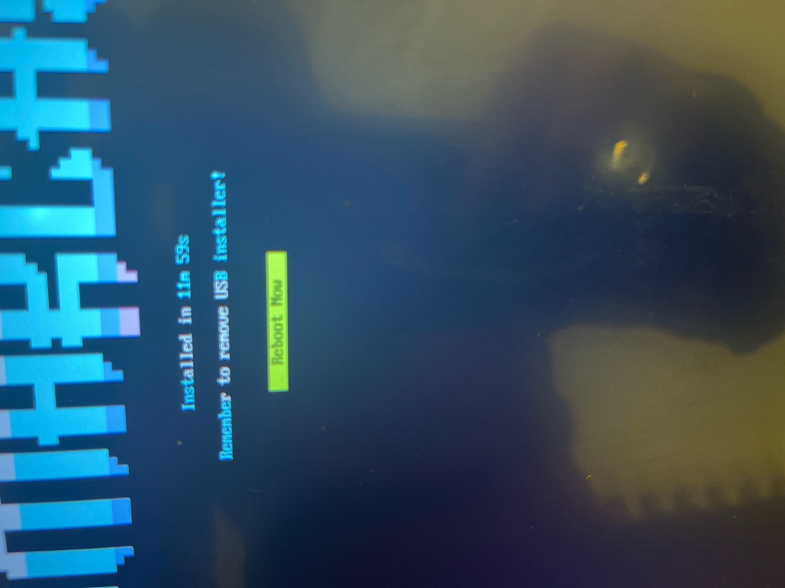
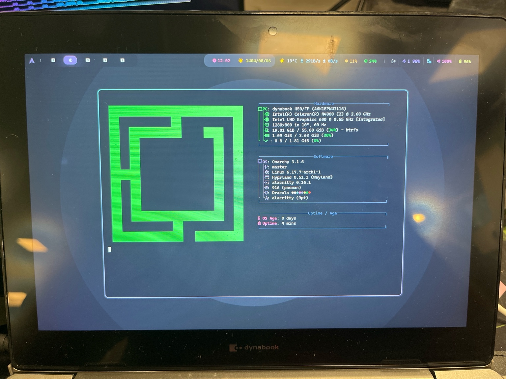

Is Dynabook Good? Full Review for Linux & Windows 11 (+ My $50 Dynabook Story)

Quick Answers: Is Dynabook Good?
Yes. Dynabook laptops are reliable, Linux-friendly, and fully compatible with Windows 11. They're a great alternative to ThinkPad at lower prices, especially on the used market.
- Is Dynabook good for Linux? Yes—Wi-Fi, audio, touch, rotation, suspend, and USB-C video worked across my devices.
- Is Dynabook good for Windows 11? Yes—TPM 2.0, Secure Boot, drivers, and firmware updates are supported.
My Dynabook Journey: True Japanese Design
I now use three Dynabooks for different roles, and all feel like classic Japanese engineering—practical, durable, and stable:
- 10″ Dynabook B45/K50 — Celeron N4000, 4 GB, replaceable eMMC (fast), FHD touch, USB-C video.
- 12″ Dynabook R82/B — Core m, 4 GB, 256 GB SSD, 1080p convertible; Linux support is excellent.
- 14″ Dynabook X40J — Core i7-1165G7, 16 GB, 1.4 kg magnesium/aluminum, MIL-STD-810G.
Omarchy Install & Hyperland Fix

Install times I measured:
- Dynabook N4000: ~12 min
- Core m5 tablet: ~11 min
- Lenovo Miix 320 (Atom x5): 22 min
- MacBook Pro 2017: 9 min
On first boot the cursor/touch was flipped in Hyperland. The fix was a single line:
no_hardware_cursors = trueAfter that, touch, rotation, and gestures were perfect.

Day-1 Workflow: Real Development on a $50 Tablet
I used the 10″ Dynabook all day for real work. Results:
- Apps launch instantly (big jump from Atom).
- Chrome finally smooth; DevTools responsive.
- Zed + Copilot, Warp terminal, and Cursor all ran great.
- NGINX locally with editor and browser → no lag.
- System stayed around ~1.1–1.3 GB RAM with Wayland.
USB-C → HDMI: Second Monitor Works
The 10″ model mirrored to an external 1080p display via USB-C to HDMI without issues. Dual-monitor coding on a $50 tablet is real.
Is Dynabook Good for Linux?
Yes. Across Arch/Omarchy, Manjaro, Fedora, KDE, GNOME, Cinnamon, and Hyperland, everything worked. Only the small Hyperland cursor quirk needed the config line above.
- Wi-Fi, BT, audio, brightness keys → ✅
- Touch, rotation, pen → ✅
- Suspend/resume → ✅
- USB-C video → ✅
Is Dynabook Good for Windows 11?
Yes. The X40J supports TPM 2.0, Secure Boot, and official drivers/firmware. Windows 11 runs perfectly with strong battery life.
Dynabook vs ThinkPad (Developer's View)
| Area | Dynabook | ThinkPad |
|---|---|---|
| Linux compatibility | Excellent | Excellent |
| Build quality | All-metal, MIL-STD-810G | Magnesium/aluminum, MIL-STD |
| Price (used) | Lower | Higher |
| Fingerprint placement | Top-left of touchpad (awkward) | Under power button (better) |
| TrackPoint | Smooth, blue; no middle button | Classic red; full 3-button |
| Displays | Base 250 nits on some models | Often brighter options |
Model Notes
Dynabook B45/K50 (10″, N4000)
FHD touch, fast eMMC (feels like SATA), USB-C video, great for travel. Massive upgrade over Atom x5 tablets.
Dynabook R82/B (12″, Core m)
Convertible 12″, 256 GB SSD, excellent Linux support; my compact "tablet-laptop."
Dynabook X40J (14″, Core i7-1165G7)
16 GB RAM, 1.4 kg, aluminum alloy, MIL-STD-810G. Close to ThinkPad T14 Gen 3 in feel and performance.
Conclusion
Is Dynabook good? Absolutely. For Linux and Windows 11, Dynabook is a reliable, durable, and highly compatible choice—and often a better value than rivals. From a $50 10″ tablet to a 14″ i7 ultrabook, every Dynabook I tested felt like a practical developer tool with real Japanese design DNA.